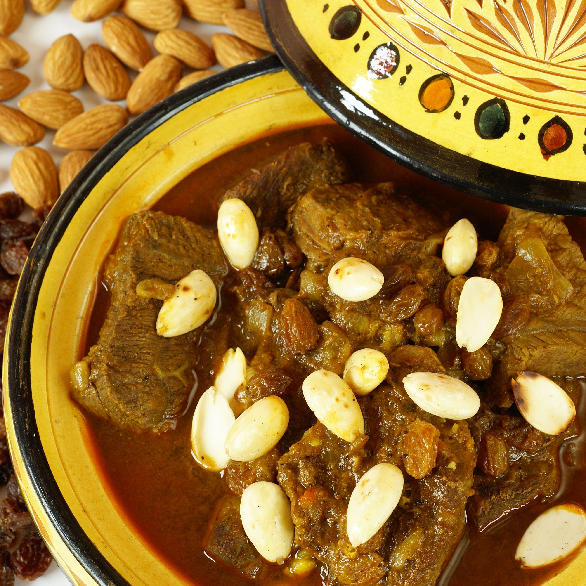

FCIS
sofra
Egyptian
Turkish
Moroccan
Palestinian
Asian
moroccan-mrouzia
Mrouzia is an old and traditional Moroccan tagine of meat, raisins, almonds and honey.

ingredients
To prepare the meat:
1 ½ kg of lamb (shoulder or neck meat) with bone .
2 teaspoons of Moroccan Ras El-Hanout spices .
2 teaspoons ground ginger .
1 ½ teaspoon salt .
1 teaspoon black pepper .
½ teaspoon turmeric .
½ teaspoon saffron threads .
To prepare the sauce :
2 chopped onions .
3 crushed garlic cloves .
2 cinnamon sticks .
½ cup unsalted butter
3 cups of water .
1 ½ cup raisins .
½ cup honey .
1 teaspoon ground cinnamon .
½ cup peeled almonds .
preparation